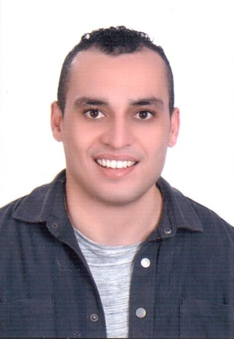

Islam Soliman
Software Engineer

Summary
Passionate software engineer transitioning from electrical engineering, equipped with robust software engineering fundamentals. Eager to contribute innovative solutions and embrace challenges in this dynamic field, bringing a fresh perspective and enthusiasm for continuous learning. Committed to upholding best practices, I am excited to make a significant impact in software development.
Education
Bachelor of Electrical Engineering - Alexandria University 2013 - 2018
Achieved a high academic performance, ranking fourth in the class of 2018 and 13th among all graduates with an 83.45% cumulative score.
Work experience
Controls Engineer - Advansys ESC
(Dematic-Ext) 01/2022 – 01/2023
-
Analyze the hardware requirements and specifications of the clients and propose suitable solutions.
-
Design and develop hardware components and systems using design software such as AutoCAD, Eplan, and Maestro.
-
Troubleshoot and resolve any hardware issues or defects.
-
Document the hardware design process and generate technical reports.
-
Collaborate with software engineers to ensure the compatibility and integration of the hardware and software components.
-
Oversee the manufacturing process of the hardware components and ensure they meet the quality standards.
-
Provide technical support and guidance to the clients and other stakeholders.
Technical Office Engineer - Alexandria
Trading Engineering Bureau (ATEB) 07/2020 – 12/2021
-
Prepare technical proposals and quotations for electric motors according to the client’s requirements and specifications.
-
Coordinate with the sales team and the clients to provide technical support and guidance on the selection, installation, operation, and maintenance of electric motors.
-
Review and approve the technical drawings and documents of electric motors and ensure their compliance with the standards and regulations.
-
Communicate with Siemens and other suppliers to obtain the necessary information, data sheets, certificates, and warranties for Siemens electric motors.
-
Follow up on the delivery, testing, commissioning, and after-sales service of electric motors and ensure customer satisfaction.
-
Update and maintain the technical office database and records of electric motors.
-
Conduct market research and analysis on the latest trends and technologies in electric motors and related fields.
Skills
- Object Oriented Programming (OOP)
- Design Patterns
- Python
- SQL
- Dart
- Java
- HTML
- Flutter
Interests
Powerlifting
Three times winner of the Egyptian Republic Powerlifting Championship.